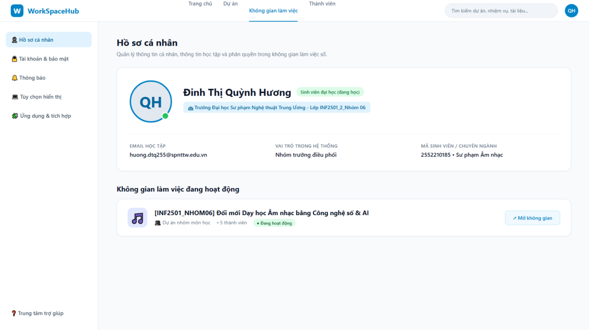
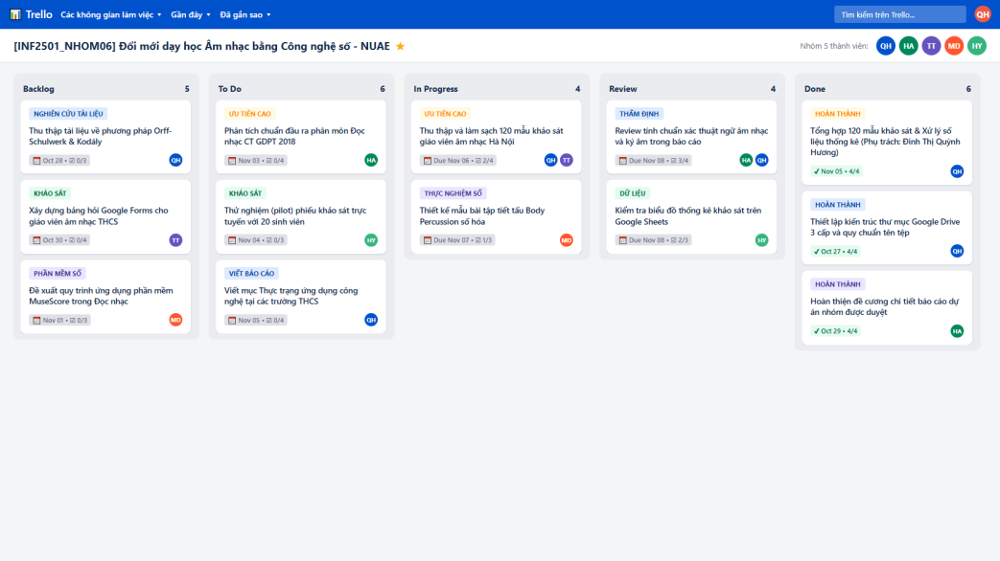
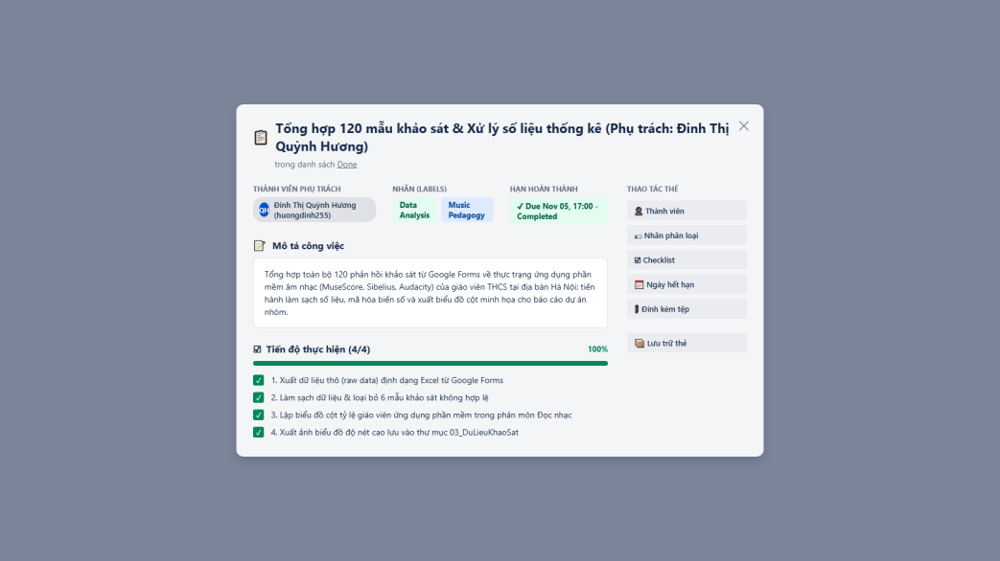
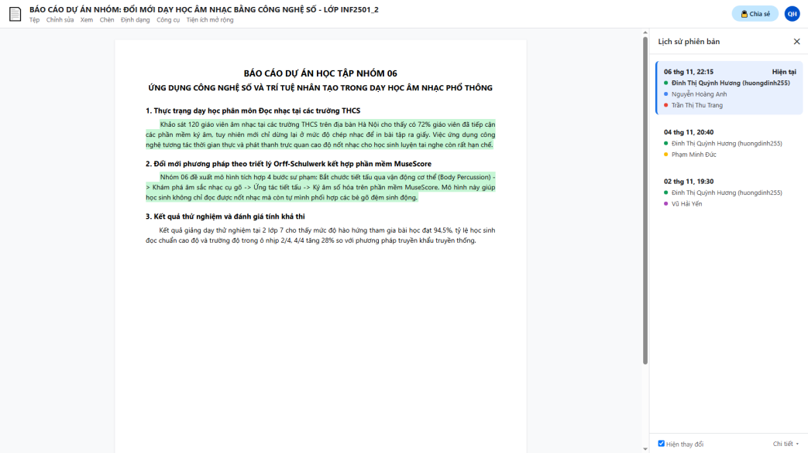
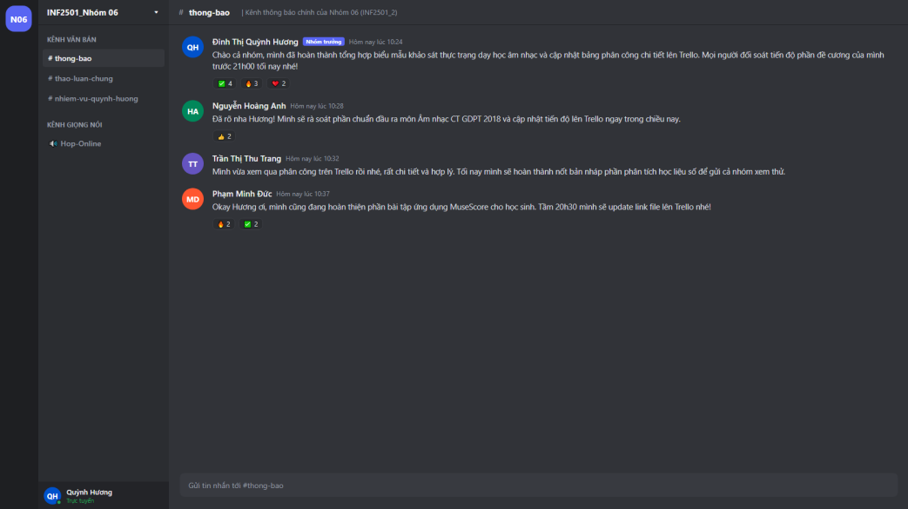
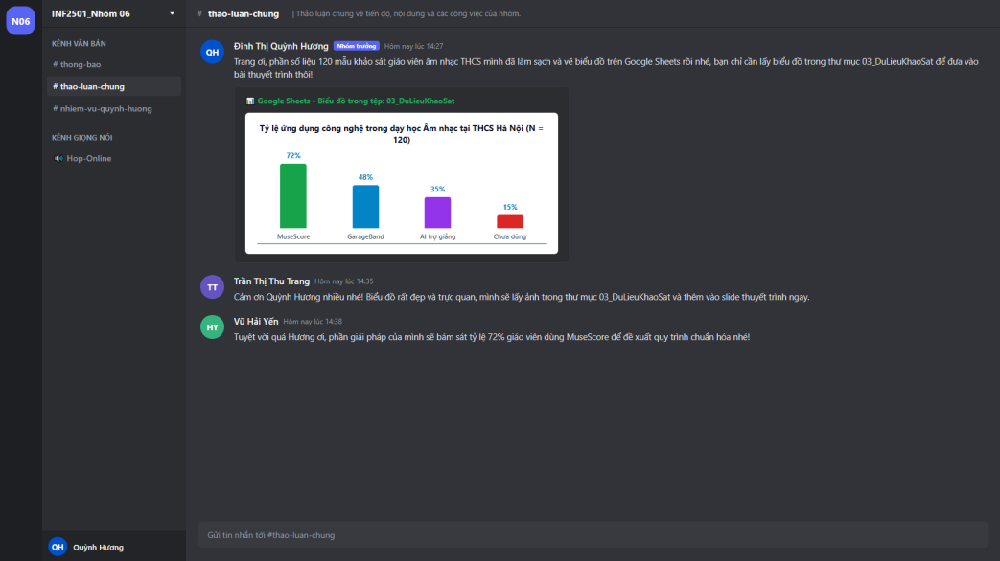
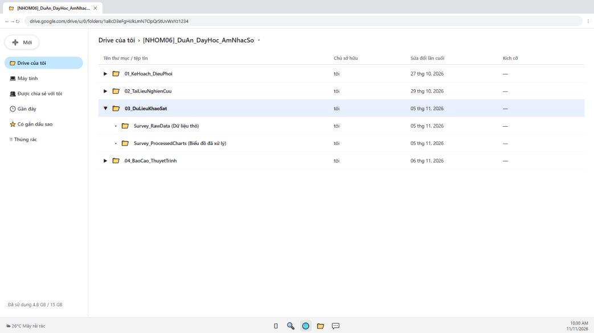
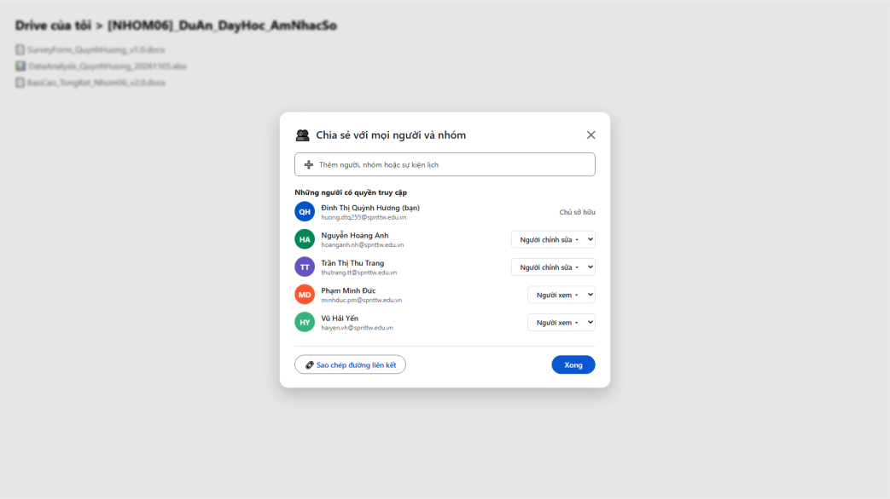

aMục tiêu bài tập
Yêu cầu
Dùng công cụ quản lý dự án và hợp tác trực tuyến để tổ chức, phân công và phối hợp công việc nhóm; trình bày minh chứng thực tế về đóng góp cá nhân.
Dự án nhóm
“Ứng dụng công nghệ số và trí tuệ nhân tạo trong đổi mới phương pháp dạy học âm nhạc tại các trường trung học cơ sở trên địa bàn Hà Nội”: Nhóm 4, gồm 5 thành viên: Nguyễn Đức Huy, Nguyễn Quốc Huy, Nguyễn Khánh Huyền, Phạm Thị Hường và Đinh Thị Quỳnh Hương.
Trong nhóm, mình phụ trách theo dõi tiến độ, thiết lập không gian làm việc chung, tạo biểu mẫu khảo sát, tham gia xử lý số liệu và viết đề xuất ứng dụng AI.
Kỹ năng được rèn luyện
- Lập kế hoạch, chia nhỏ công việc và đặt tiêu chí nghiệm thu
- Theo dõi tiến độ trên bảng Kanban
- Soạn thảo cộng tác, góp ý bằng bình luận và chế độ đề xuất
- Tổ chức tệp dùng chung và phân quyền truy cập
- Giao tiếp, giải quyết bất đồng trong môi trường trực tuyến
bTóm tắt quá trình thực hiện
Các bước thực hiện
- Thiết lập không gian làm việc: tạo bảng Trello, tài liệu Google Docs, thư mục Google Drive và máy chủ Discord cho cả nhóm.

Hình 1. Thiết lập không gian làm việc của nhóm - Phân công và theo dõi công việc trên Trello: 5 cột Backlog → To Do → In Progress → Review → Done; mỗi thẻ có người phụ trách, nhãn màu, checklist, hạn chót. Mình lập kế hoạch thứ Hai, rà tiến độ thứ Năm, nghiệm thu thứ Bảy.

Hình 2. Bảng Kanban trên Trello - Thu thập và xử lý dữ liệu: soạn biểu mẫu Google Forms về nhu cầu dùng công nghệ số trong giờ Âm nhạc ở THCS, xử lý 120 phiếu khảo sát; thẻ Trello và tin nhắn Discord đều dẫn về tệp chính trên Drive.

Hình 3. Thẻ khảo sát và checklist trên Trello - Viết và duyệt báo cáo trên Google Docs: cùng soạn, góp ý bằng bình luận và chế độ đề xuất; lịch sử phiên bản ghi lại đóng góp vào các ngày 02/11, 04/11, 06/11.

Hình 4. Lịch sử phiên bản trên Google Docs - Trao đổi và chốt phương án trên Discord: các kênh #thong-bao, #thao-luan-chung, #nhiem-vu-quynh-huong, #hop-online; mình duy trì hơn 12 lượt trao đổi chuyên môn mỗi tuần và ghim nội dung đã thống nhất.

Hình 5. Trao đổi tiến độ trong kênh thông báo 
Hình 6. Hỗ trợ thành viên phân tích dữ liệu - Hoàn thiện: viết phần đề xuất ứng dụng MuseScore, Suno AI, Moises trong dạy học cảm thụ âm nhạc và hoàn thiện báo cáo tổng thể.


Công cụ đã sử dụng
| Công cụ | Nhóm dùng để làm gì | Hạn chế và cách xử lý |
|---|---|---|
| Trello | Giao việc, theo dõi tiến độ bằng Kanban; thẻ có người phụ trách, nhãn, checklist, hạn chót | Dễ quá tải thẻ khi dự án dài → lưu trữ (Archive) thẻ đã nghiệm thu, thống nhất nhãn màu |
| Google Docs | 5 người cùng viết, bình luận, chế độ đề xuất, xem lịch sử phiên bản | Dễ lệch định dạng khi dán từ ngoài → thống nhất kiểu tiêu đề, Times New Roman 13 ngay từ đầu |
| Google Drive | Lưu bản làm việc và dữ liệu khảo sát theo cây thư mục 3 cấp; liên kết từ Trello và Discord | Dung lượng có hạn → dọn tệp trùng lặp, dùng tài khoản sinh viên; phân quyền theo vai trò |
| Discord | Thông báo, thảo luận theo kênh, họp thoại, chia sẻ màn hình | Tin quan trọng dễ bị trôi → ghim thông báo, ghi biên bản ngắn sau mỗi buổi họp |
| Google Forms | Khảo sát nhu cầu dùng công nghệ số trong giờ Âm nhạc | Cần chuẩn hóa cách lấy mẫu giữa các thành viên |
Ghi nhận sử dụng AI
Báo cáo bài này không ghi nhận sử dụng công cụ AI trong quá trình phối hợp nhóm. Suno AI và Moises xuất hiện trong bài là nội dung đề xuất của dự án (công cụ đề nghị dùng trong dạy học), không phải công cụ dùng để làm bài.
Khó khăn và cách giải quyết
| Khó khăn gặp phải | Cách giải quyết |
|---|---|
| Lịch học thực hành nhạc cụ, luyện thanh, hợp xướng của các thành viên khác nhau nên khó họp đông đủ, quyết định bị chậm. | Làm việc bất đồng bộ qua Trello và Docs: mỗi yêu cầu gắn tên người cần phản hồi và báo hạn trước 24 giờ, mọi người đọc và góp ý giữa các ca tập. |
| Tệp (bản phổ MuseScore, âm thanh wav/mp3, slide, biểu mẫu) bị chia sẻ rải rác trên Discord và Drive, dễ thất lạc, thông báo bị loãng. | Chỉ lưu tài liệu chính thức trên cây thư mục Drive của nhóm; thẻ Trello chỉ gắn liên kết Drive; Discord chỉ dẫn link thư mục, không gửi tệp lẻ. |
| Ý kiến biên tập khác nhau, dễ sửa đè lên phần của nhau trên Google Docs. | Bắt buộc dùng chế độ đề xuất khi sửa phần người khác; họp thoại 30 phút tối thứ Năm trên Discord để thống nhất rồi mình mới chấp nhận thay đổi. |
Bài học rút ra
Qua dự án, mình thực hành giao việc có tiêu chí nghiệm thu, chia sẻ tệp theo quyền, thống nhất ý kiến và hoàn thiện nội dung cùng các thành viên. Mình nhận ra rằng sử dụng thành thạo các công cụ chỉ là một phần của quá trình làm việc nhóm. Điều quan trọng hơn là mỗi thành viên cần có trách nhiệm với phần việc của mình, tuân thủ cách làm chung và sẵn sàng trao đổi khi có ý kiến khác nhau. Cách tổ chức này dùng được khi cùng đồng nghiệp soạn giáo án điện tử hoặc xây dựng học liệu âm nhạc.
cSản phẩm cuối cùng
Minh chứng tổ chức dự án nhóm: nhiệm vụ cá nhân, cây thư mục dùng chung, quy tắc đặt tên, phân quyền và đánh giá hiệu quả.
Nhiệm vụ cá nhân của mình
| Nhiệm vụ | Công cụ | Kết quả / minh chứng |
|---|---|---|
| Điều phối tiến độ, cập nhật thẻ ít nhất 3 lần/tuần (thứ Hai, thứ Năm, thứ Bảy) | Trello | Hình 2, Hình 3 |
| Thiết lập hệ thống lưu trữ và cấu trúc dữ liệu dùng chung | Google Drive | Hình 7, Hình 8 |
| Soạn biểu mẫu khảo sát về nhu cầu dùng công nghệ số trong giờ Âm nhạc THCS | Google Forms | Tệp SurveyForm_QuynhHuong_v1.0.docx |
| Thu thập và xử lý 120 phiếu khảo sát; hỗ trợ thành viên chuẩn hóa lấy mẫu và vẽ biểu đồ | Google Forms, Discord | Hình 6 |
| Viết chương đề xuất ứng dụng AI (MuseScore, Suno AI, Moises) trong dạy học cảm thụ âm nhạc; rà soát văn phong, định dạng | Google Docs | Hình 4 |
| Thông báo lịch họp, nhắc hạn, ghim biên bản thống nhất | Discord | Hình 5 |
Cây thư mục dùng chung trên Google Drive
[NHOM04]_DuAn_AI_AmNhac_THCS (cấp 1: chỉ chia sẻ cho 5 thành viên và giảng viên) ├── 01_KeHoach_DieuPhoi (cấp 2) ├── 02_TaiLieuNghienCuu ├── 03_DuLieuKhaoSat │ ├── Survey_RawData (cấp 3: dữ liệu thô, chỉ người phụ trách được sửa) │ └── Survey_ProcessedCharts (biểu đồ, slide số liệu đã làm sạch) └── 04_BaoCao_ThuyetTrinh
Quy tắc đặt tên tệp và phân quyền
- Cấu trúc tên:
[MãDựÁn]_[TênTệp]_[NgườiPhụTrách]_[Ngày_PhiênBản]. Ví dụ:SurveyForm_QuynhHuong_v1.0.docx,DataAnalysis_QuynhHuong_20261105.xlsx,MusicTechLessonPlan_v2.0.pptx. - Mình giữ quyền chỉnh sửa dữ liệu thô; thành viên được giao việc có quyền Editor với tệp mình phụ trách; người ngoài chỉ được Viewer hoặc Commenter.




Đánh giá hiệu quả
Hiệu quả: Kanban giúp mình không quên hạn trong tuần cao điểm; lịch sử phiên bản trên Docs ghi nhận rõ đóng góp của từng người; dùng một địa điểm lưu trữ chung trên Drive giúp mọi thành viên sử dụng cùng một phiên bản tài liệu. Chưa tốt: giai đoạn đầu tệp bị chia sẻ rải rác và thông báo bị trôi, nhóm phải đặt lại quy tắc lưu tệp và ghim thông báo giữa chừng; lịch thực hành khác nhau khiến các quyết định gấp vẫn bị chậm.
Báo cáo bài tập
Bản PDF báo cáo cá nhân, gồm tám hình minh chứng và bảng đánh giá bốn công cụ.